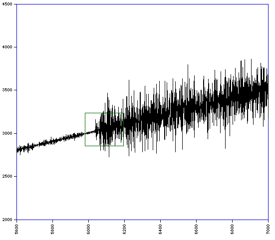

Hofstadter "Q" series
Written by Paul Bourke
Compiled March 2000
Listen (mov or midi)
to the first 300 terms of the Q series.
Definition:
Q[n] = Q[n-Q[n-1]] +
Q[n-Q[n-2]]
. . . for n > 2
Q[n] = 1 . . . for n = 1 or n = 2
This series is attributed to Douglas Hofstadter.
It is similar to a Fibonacci series except that the two previous
terms that are added together to form the next term are determined
from past values of the series itself instead of just the last 2 terms.
What makes this series unpredictable the further one gets from
the start is that in a sense the next term depends in a non-obvious
way on all the terms that came before.
The first 1000 terms are given below:
1 1 2 3 3 4 5 5 6 6 6 8 8 8 10 9 10 11 11 12
12 12 12 16 14 14 16 16 16 16 20 17 17 20 21 19 20 22 21 22
23 23 24 24 24 24 24 32 24 25 30 28 26 30 30 28 32 30 32 32
32 32 40 33 31 38 35 33 39 40 37 38 40 39 40 39 42 40 41 43
44 43 43 46 44 45 47 47 46 48 48 48 48 48 48 64 41 52 54 56
48 54 54 50 60 52 54 58 60 53 60 60 52 62 66 55 62 68 62 58
72 58 61 78 57 71 68 64 63 73 63 71 72 72 80 61 71 77 65 80
71 69 77 75 73 77 79 76 80 79 75 82 77 80 80 78 83 83 78 85
82 85 84 84 88 83 87 88 87 86 90 88 87 92 90 91 92 92 94 92
93 94 94 96 94 96 96 96 96 96 96 128 72 96 115 100 84 114 110 93
106 124 82 101 111 108 118 104 108 106 114 104 114 109 100 109 120 112 108 118
106 105 130 110 114 115 112 107 120 114 122 121 120 114 138 110 122 119 120 130
132 113 133 123 118 125 121 129 122 136 129 116 149 137 120 123 143 146 107 139
138 139 135 120 146 135 143 129 151 133 135 136 148 148 136 144 143 152 129 139
151 140 148 136 151 159 125 147 153 148 154 152 136 152 155 146 144 162 151 157
154 149 160 155 152 155 162 154 159 153 165 157 154 168 161 156 160 168 153 169
170 159 161 172 161 168 161 172 171 161 171 172 167 172 172 168 175 170 171 173
174 175 175 174 176 174 177 182 175 178 178 184 177 178 184 180 179 186 179 185
185 184 186 184 187 188 186 186 188 190 187 188 190 192 188 192 190 192 192 192
192 192 192 256 135 202 210 188 200 220 186 196 202 242 149 201 229 171 193 238
188 193 206 228 202 193 220 196 210 202 214 220 182 217 234 204 208 215 215 222
218 194 231 186 216 236 210 240 204 211 230 230 164 234 241 239 214 220 222 230
222 222 212 226 228 230 228 230 214 228 252 203 242 233 219 252 230 215 243 238
242 228 244 228 228 238 240 221 249 228 238 237 248 237 231 238 245 250 234 239
234 262 228 228 286 239 235 271 249 240 242 252 261 233 253 268 243 234 269 257
244 264 227 273 273 240 257 258 245 262 257 256 266 275 252 252 292 250 263 276
264 271 223 303 254 266 286 252 276 289 233 284 279 256 252 275 290 264 258 284
291 275 245 302 290 246 297 278 251 287 277 282 279 272 292 256 300 295 227 313
301 260 299 301 255 311 280 290 282 286 304 288 302 295 287 304 296 288 302 304
272 305 317 272 283 328 262 307 301 301 296 300 280 320 297 295 306 312 261 318
321 287 296 314 313 288 305 329 294 307 315 296 322 320 291 307 321 309 315 317
310 309 322 310 321 308 308 338 324 307 334 323 304 326 330 308 333 313 323 321
337 322 325 312 336 325 324 333 317 327 344 315 329 332 329 333 344 329 322 341
340 329 333 343 331 333 340 344 332 338 338 344 343 332 347 345 333 343 342 345
339 350 341 347 344 346 349 346 348 349 350 350 350 348 353 357 347 352 361 353
355 352 360 358 353 359 360 357 359 355 364 361 359 361 358 370 356 366 363 357
370 371 361 363 368 372 363 367 372 372 358 377 368 367 372 372 374 372 373 372
374 376 374 376 375 377 378 377 375 378 382 382 374 380 380 384 380 384 380 384
382 384 384 384 384 384 384 512 278 398 451 362 373 408 379 415 355 417 370 388
416 430 363 396 394 416 389 381 434 390 367 409 492 284 417 448 367 408 416 452
310 430 451 369 417 414 422 444 397 370 439 412 380 427 429 410 408 398 432 382
422 468 372 383 464 396 416 450 374 444 440 384 416 443 411 418 451 432 408 426
398 430 410 451 483 335 440 462 420 399 433 457 423 459 431 445 456 375 434 522
381 407 514 408 408 430 457 434 461 449 396 469 473 390 479 468 381 445 468 461
404 468 468 408 453 414 482 430 463 448 452 456 436 435 481 476 422 432 485 455
434 449 482 413 483 492 420 475 483 451 478 476 455 463 441 473 464 461 434 482
457 458 466 453 480 478 442 467 463 484 449 458 459 469 476 478 485 480 476 466
459 466 473 488 467 449 473 500 452 462 518 474 475 473 501 447 514 483 466 478
481 462 506 479 482 463 559 483 441 511 527 470 457 565 452 517 492 481 469 526
475 509 495 480 513 488 506 519 456 494 495 477 486 550 473 453 605 492 499 502
|
This is a classic example of seemly chaotic behaviour from an apparently
simple recursive procedure. The series is not in fact chaotic but it is
self-similar. Is there a pattern, that is, is there
an underlying structure that can be described in a nonrecursive way?
Curious properties
- Q(n) / n tends to 0.5 as n tends to infinity
- Q[2n] = 2n-1
Graph of the first 10,000 terms. Slope = 0.5

First zoom in.
Second zoom in.
|